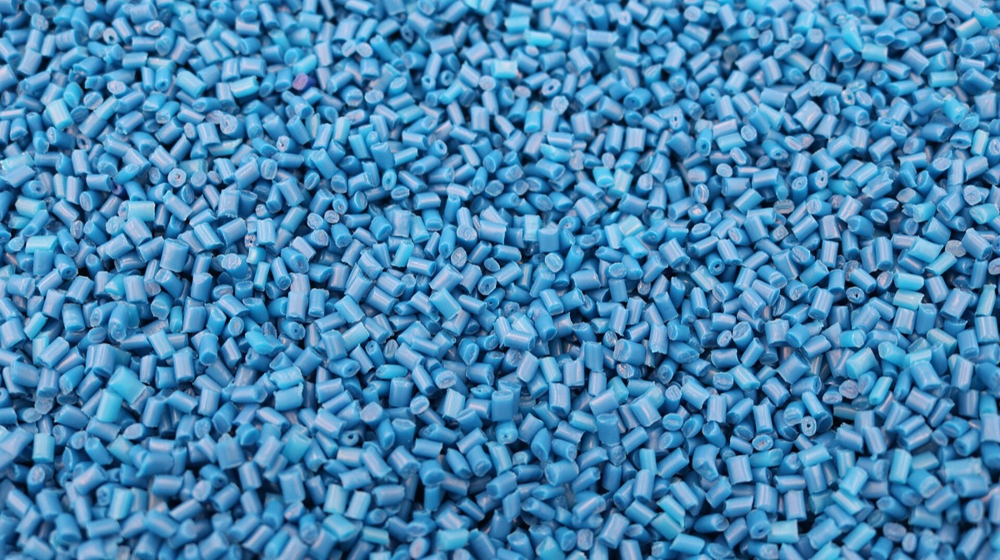
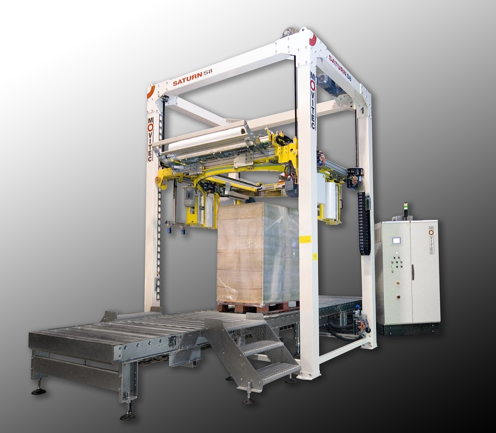
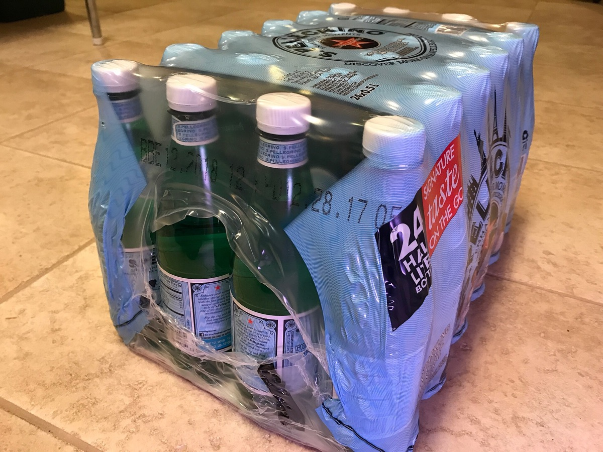
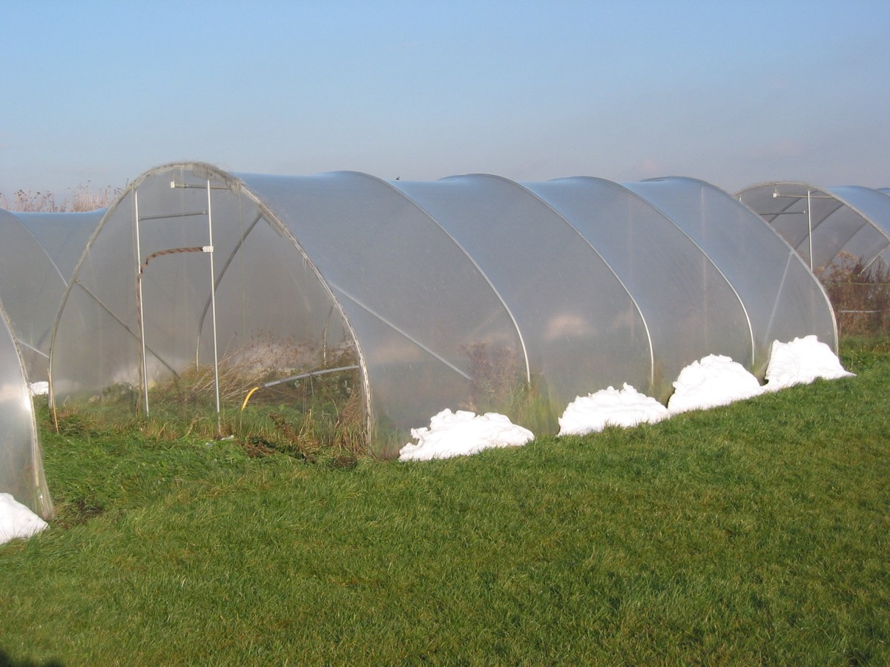
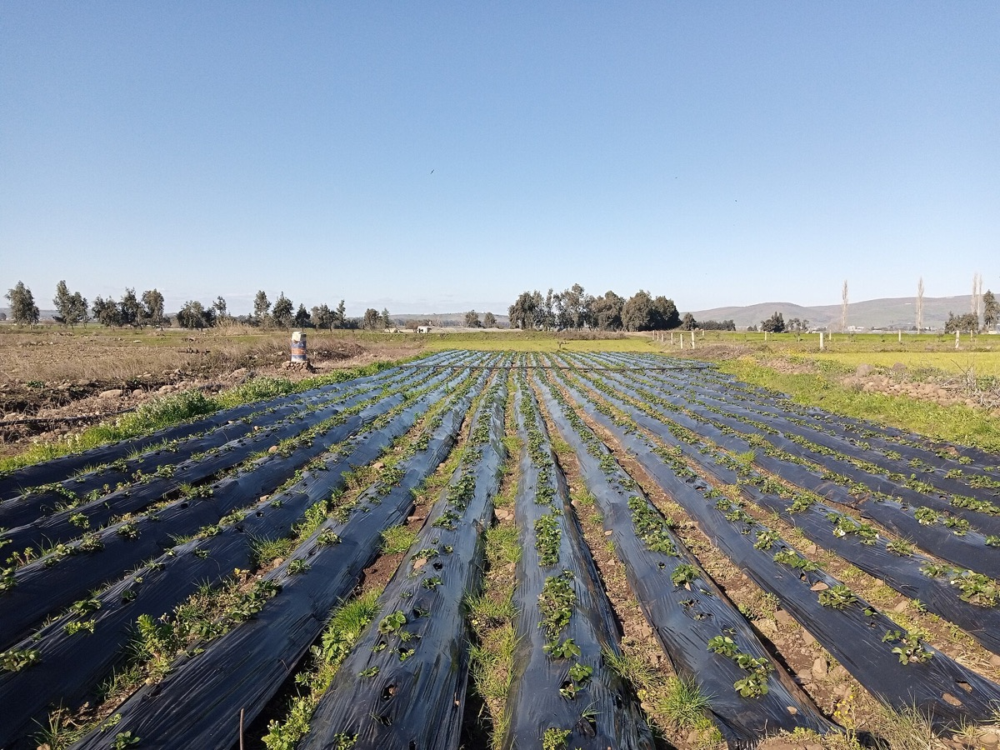
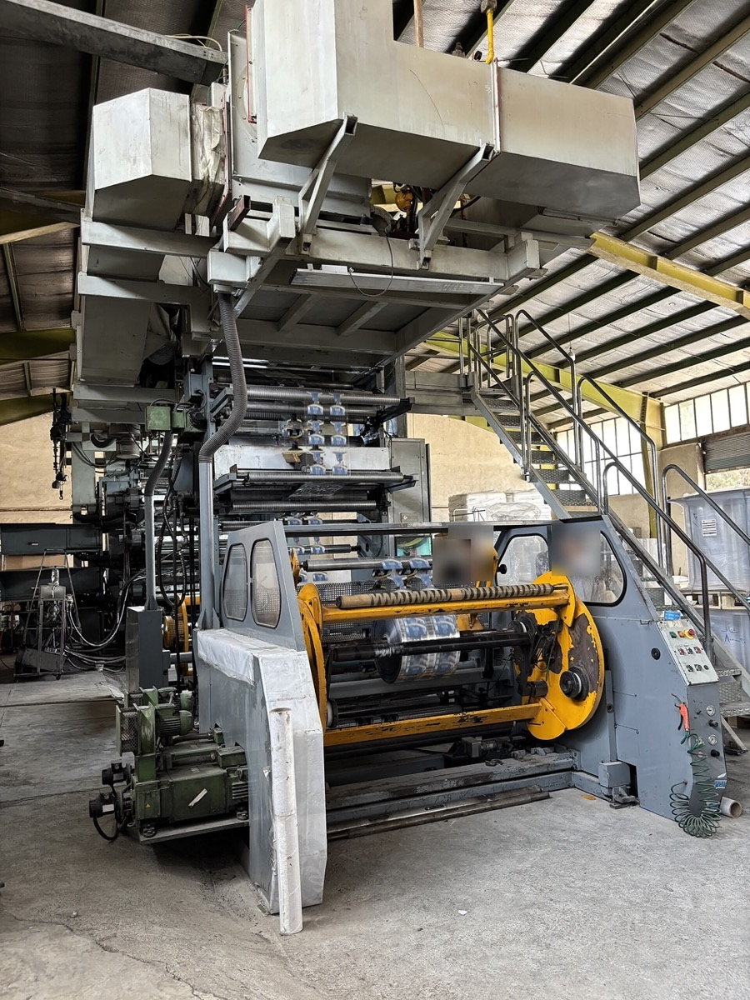

Вторичные гранулы
Переработанное полимерное сырьё: ПЭНД, ПЭВД, ПП. Из своих обрезков и принятого вторсырья.
Запросить ценуПолный ассортимент полимерной плёнки для упаковки, логистики и сельского хозяйства. Делаем на своих линиях в Каспийске, любые объёмы.


Для ручной и машинной упаковки паллет и грузов. Надёжно фиксирует товар при перевозке и хранении.
Упаковка паллет, фиксация грузов, складское хранение, транспортировка.
Ручная намотка, машинная намотка, мини-ролики.

Для групповой упаковки товаров. Плотно садится в термотоннеле и защищает продукцию от пыли и влаги.
Упаковка бутылок и коробок, групповая упаковка, пищевые продукты.


Для теплиц и открытого грунта. Повышает урожайность, защищает растения от заморозков и сорняков.
Тепличные комплексы, защита от заморозков, мульчирование почвы, влагоудержание.
Прозрачная, чёрная (мульча), чёрно-белая, с УФ-стабилизатором.

Переработанное полимерное сырьё: ПЭНД, ПЭВД, ПП. Из своих обрезков и принятого вторсырья.
Запросить цену
Разработаем упаковку под ваши требования: любые размеры, брендирование, малые партии.
Обсудить задачуОпишите груз или культуру. Подберём толщину, ширину и намотку и посчитаем стоимость.
Получить консультацию